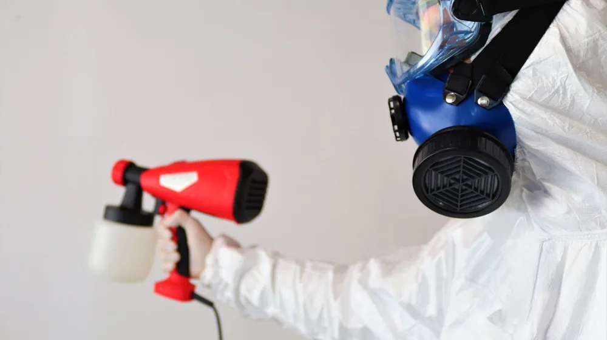

우리 집 곰팡이, 완벽 제거하고 재발까지 막는 5단계 셀프 비법
사진: Mathias Reding / Pexels (무료 이미지, 출처 표기)
벽면의 검은 점들, 곰팡이의 근본 원인부터 파악하기

집안 곳곳에 생기는 곰팡이는 단순히 보기 싫은 문제를 넘어, 호흡기 질환과 알레르기를 유발하는 등 건강에 직접적인 영향을 미칩니다. 아무리 제거해도 다시 피어나는 곰팡이 때문에 고민이 많으셨나요? 이 글에서는 곰팡이의 근본 원인을 파악하고, 안전하게 제거하는 방법부터 재발을 막는 실질적인 관리 팁까지, 초보자도 쉽게 따라 할 수 있는 5단계 비법을 안내해 드립니다.
곰팡이가 생기는 가장 큰 원인은 '습기'입니다. 특히 실내 습도가 70% 이상, 온도가 20~30°C일 때 번식 속도가 빨라집니다. 환기 부족, 누수, 결로 현상, 그리고 에어컨이나 가습기 사용으로 인한 과도한 습기 등이 주요 원인입니다. 특히 겨울철 실내외 온도 차이로 인해 발생하는 결로는 벽면에 물방울이 맺히게 하여 곰팡이가 서식하기 좋은 환경을 만듭니다.
안전이 최우선! 곰팡이 제거, 이렇게 준비하고 시작하세요
곰팡이 제거 작업 시에는 안전이 가장 중요합니다. 곰팡이 포자 흡입을 막기 위한 마스크(KF94 이상 권장), 피부 보호를 위한 고무장갑과 긴팔 옷, 그리고 눈 보호를 위한 보안경을 반드시 착용해야 합니다. 제거제 사용 시 화학 물질로부터 눈과 피부를 보호하는 필수적인 조치입니다.
작업 전에는 반드시 창문을 열어 충분히 환기시키고, 곰팡이 포자가 다른 곳으로 퍼지는 것을 막기 위해 작업 공간 주변에 비닐이나 신문지를 깔아두는 것이 좋습니다. 또한, 작업 중에는 어린이와 반려동물의 접근을 제한하여 안전사고를 예방해야 합니다. 락스 등 독한 제거제 사용 시에는 특히 주의가 필요합니다.
전문가처럼 곰팡이 완벽 제거하는 5단계 실전 가이드
다음은 가정에서 곰팡이를 안전하고 효과적으로 제거하는 단계별 방법입니다. 2026년 08월 기준으로 안내하며, 사용 제품별 주의사항은 제품 설명서를 참고하세요.
- 주변 정리 및 보호 장비 착용: 곰팡이가 발생한 공간 주변의 물건을 치우고, 마스크, 장갑, 보안경 등 보호 장비를 착용합니다. 환기를 위해 창문을 열어둡니다.
- 곰팡이 제거제 도포: 벽, 타일, 실리콘 등 곰팡이가 핀 부위에 제거제를 충분히 뿌리거나 바릅니다. 락스를 물과 1:1 비율로 희석하여 사용하거나, 시판 곰팡이 제거제를 사용할 수 있습니다. 벽지처럼 민감한 재질은 먼저 눈에 띄지 않는 곳에 테스트해 변색 여부를 확인합니다.
- 충분히 기다린 후 닦아내기: 제거제가 곰팡이에 충분히 스며들어 작용할 수 있도록 10~30분 정도 기다립니다. 그 후 솔, 수세미, 젖은 헝겊 등으로 곰팡이를 닦아냅니다. 뿌리까지 제거한다는 생각으로 꼼꼼하게 작업하는 것이 중요합니다.
- 깨끗한 물로 헹구고 건조: 곰팡이와 제거제 잔여물을 깨끗한 물로 닦아내거나 헹굽니다. 이후 마른 헝겊으로 물기를 제거하고, 선풍기나 제습기를 이용하여 해당 부위를 완전히 건조시킵니다. 습기가 남아있으면 곰팡이가 다시 생길 수 있으므로 철저한 건조가 필수입니다.
- 재발 방지제 도포 및 관리: 완전히 건조된 표면에 곰팡이 재발 방지 스프레이나 방지 페인트를 도포하여 예방 효과를 높입니다. 이 과정은 선택 사항이지만, 장기적인 곰팡이 방지에 큰 도움이 됩니다.
다시는 보지 말자! 곰팡이 재발 막는 생활 습관과 관리법
곰팡이 제거만큼 중요한 것이 재발 방지입니다. 다음 생활 습관을 통해 쾌적한 실내 환경을 유지할 수 있습니다.
- 충분한 환기: 하루 2~3회, 10분 이상 창문을 열어 자연 환기를 시키세요. 특히 요리 후, 샤워 후에는 반드시 환기를 통해 습기를 배출해야 합니다.
- 적정 실내 습도 유지: 실내 습도를 50~60%로 유지하는 것이 좋습니다. 제습기나 에어컨을 활용하여 습기를 조절하고, 빨래는 실내보다 외부에서 건조하는 것을 권장합니다.
- 결로 현상 방지: 겨울철에는 실내 적정 온도를 유지하고, 가구와 벽 사이에 공간을 두어 공기 순환을 돕습니다. 단열이 취약한 창문 주변에는 단열재를 부착하는 것도 도움이 됩니다.
- 주기적인 청소: 곰팡이가 생기기 쉬운 욕실, 주방, 창문 틈새 등을 주기적으로 청소하고 건조시킵니다. 곰팡이 방지 기능이 있는 페인트나 실리콘을 사용하는 것도 좋은 방법입니다.
다음 표는 일반적인 곰팡이 제거제들의 특징과 활용법을 정리한 것입니다.
*위 내용은 일반적인 정보이며, 사용 전 반드시 제품의 설명서와 주의사항을 확인하세요. 정확한 사항은 전문가와 상의하거나 공식 기관에서 다시 확인하시길 권장합니다.
곰팡이 제거에 대한 궁금증, Q&A로 풀어보기
Q1: 락스로 곰팡이를 제거할 때 꼭 마스크를 써야 하나요?
네, 락스는 염소 가스를 발생시키므로 반드시 KF94 이상의 마스크를 착용해야 합니다. 염소 가스는 호흡기에 자극을 주며, 심한 경우 질식 위험도 있습니다. 또한, 환기가 잘 되는 곳에서만 사용하고, 산성 세제와 절대 혼합하지 마세요. 유독 가스가 발생하여 매우 위험할 수 있습니다.
Q2: 벽지에 생긴 곰팡이는 어떻게 제거해야 하나요?
벽지 곰팡이는 일반 벽지와 실크벽지에 따라 다릅니다. 일반 벽지는 곰팡이 제거제를 분무한 뒤 부드러운 천으로 닦아내고 완전히 건조시킵니다. 실크벽지는 방수 코팅이 되어 있어 비교적 쉽게 닦이지만, 곰팡이가 벽지 안쪽까지 침투했을 경우 벽지를 제거하고 단열재 교체 등의 전문적인 시공이 필요할 수 있습니다.
Q3: 곰팡이 제거 후 환기는 얼마나 오래 해야 할까요?
곰팡이 제거제 사용 후에는 최소 30분에서 1시간 이상 충분히 환기해야 합니다. 특히 락스 같은 강한 화학 성분이 포함된 제거제를 사용했다면, 잔여 가스가 완전히 배출될 때까지 더 오랫동안 환기하는 것이 좋습니다. 환기 팬이나 선풍기를 이용하면 환기 효과를 높일 수 있습니다.
Q4: 아이가 있는 집에서도 곰팡이 제거제를 사용해도 괜찮을까요?
아이가 있는 집에서는 가능하면 친환경 곰팡이 제거제(과산화수소, 베이킹소다+식초 등)를 사용하는 것이 안전합니다. 화학 제거제를 사용해야 한다면, 아이가 없는 시간에 작업하고 작업 후에는 충분히 환기하여 화학 성분이 완전히 제거된 것을 확인한 후에 아이가 공간에 접근하도록 해야 합니다.
🔗 이 글도 함께 보면 좋아요: 전통 공예품, 우리 집 인테리어에 '힙'하게 들이는 5가지 방법
관련 추천 상품
곰팡이 제거제, 제습기, 습기 제거제 관련 인기 상품 보러가기
이 포스팅은 쿠팡 파트너스 활동의 일환으로, 이에 따른 일정액의 수수료를 제공받습니다.